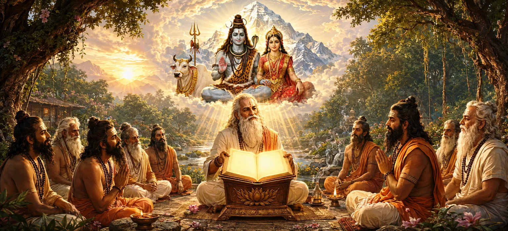

The Shiva Purana stands among the most sacred scriptures of Sanātana Dharma. It reveals the infinite greatness of Lord Shiva, the Supreme Lord who transcends creation while simultaneously dwelling within every living being. Through divine narratives, spiritual teachings, sacred dialogues, and profound wisdom, the Shiva Purana guides devotees toward devotion, righteousness, self-realization, and liberation. This opening chapter introduces the extraordinary glory of the scripture and prepares seekers for the sacred journey that lies ahead.
The Shiva Purana is not merely a collection of stories; it is a sacred reservoir of divine wisdom. For countless generations, sages, devotees, and seekers have drawn inspiration from its teachings. It explains the mysteries of creation, the nature of devotion, the path of righteousness, and the ultimate goal of human life. Its teachings remain relevant in every age because they address the eternal relationship between the soul and the Supreme Lord.
The ancient sages understood that profound spiritual truths can be difficult for ordinary people to grasp through abstract philosophy alone. Therefore, the Puranas were revealed to communicate divine wisdom through inspiring narratives, memorable characters, and sacred histories. By combining knowledge with storytelling, these scriptures make eternal truths accessible to people from all walks of life.
Among the sacred Puranas, the Shiva Purana occupies a unique position because it focuses on the glory, compassion, power, and wisdom of Lord Shiva. It reveals Him not only as the destroyer of ignorance but also as the source of creation, preservation, and liberation. Through its teachings, devotees come to understand Shiva as the Supreme Reality beyond all limitations.
The Shiva Purana teaches that Lord Shiva is the eternal source from whom all existence emerges and into whom all existence ultimately returns. He is both transcendent and immanent, beyond form yet present in every form. By understanding this truth, devotees develop deeper reverence, humility, and devotion toward the Divine.
The Mahatmya serves as a sacred introduction to the Shiva Purana. It explains why the scripture is worthy of study, how it benefits those who hear and recite it, and why sages throughout history have praised its greatness. Before entering the deeper narratives of the Purana, seekers are invited to understand the immense spiritual value of the text itself.
The Shiva Purana preserves timeless spiritual wisdom for all generations.
Lord Shiva is revealed as the eternal source and refuge of all beings.
The scripture guides devotees toward devotion, wisdom, and ultimate freedom.
The scriptures describe Kali Yuga as an age marked by confusion, distraction, and declining spiritual values. During such times, sacred texts become essential guides for humanity. The Shiva Purana provides clear teachings that help individuals maintain faith, virtue, and devotion despite the challenges of the age. Through its stories and teachings, it illuminates the path toward spiritual progress.
Listening to sacred narratives purifies the mind and fills the heart with devotion. The Shiva Purana teaches that even those who simply hear its divine stories with faith can receive spiritual merit. Sacred hearing creates a connection between the listener and the Divine, awakening inner virtues and inspiring righteous living.
Throughout history, sacred scriptures have preserved spiritual knowledge for future generations. The Shiva Purana safeguards the teachings of devotion, righteousness, compassion, and self-discipline. By studying and sharing its wisdom, devotees help preserve the timeless principles of Dharma and ensure that future generations remain connected to their spiritual heritage.
The opening chapter reminds us that true spiritual transformation begins with sacred knowledge. By approaching the Shiva Purana with humility, faith, and sincerity, devotees open their hearts to divine wisdom and prepare themselves for a deeper relationship with Lord Shiva.
Sacred knowledge does more than inform the intellect; it transforms the heart. The teachings of the Shiva Purana encourage self-reflection, devotion, and spiritual growth. Those who sincerely absorb its wisdom gradually develop purity of thought, steadiness of mind, and compassion toward all beings.
The Shiva Purana harmoniously combines devotion and wisdom. It teaches that knowledge without devotion can become dry, while devotion without understanding may lack direction. Together, these two paths guide seekers toward spiritual fulfillment and a closer union with the Divine.
This chapter serves as a gateway to the sacred teachings that follow throughout the Shiva Purana. Having understood the greatness of the scripture, readers are now prepared to explore its divine narratives, spiritual lessons, and timeless wisdom. The journey ahead promises inspiration, transformation, and a deeper understanding of Lord Shiva's infinite glory.
"The glory of sacred knowledge shines eternally, illuminating the path from ignorance to liberation."
Having learned about the sacred greatness of the Shiva Purana, continue to the next chapter where the sages inquire about the supreme scripture and seek to understand its unparalleled spiritual significance.